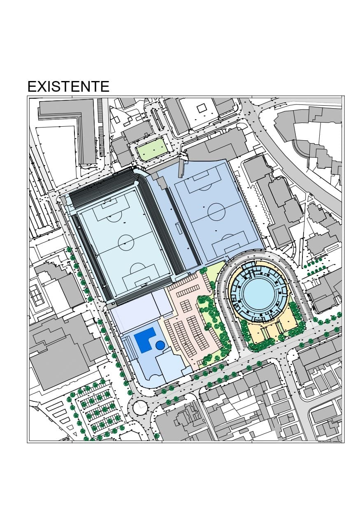
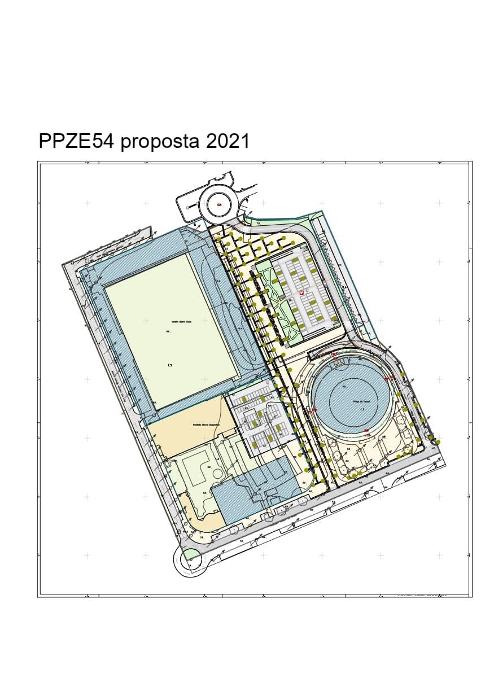

Fig.1
APRECIAÇÃO POLÍTICA DA PROPOSTA DE
ALTERAÇÃO DO PLANO DE PORMENOR PPZE54 |
PLANO DE URBANIZAÇÃO DA PÓVOA DE VARZIM
PARTIDO SOCIALISTA DA PÓVOA DE VARZIM
DEZEMBRO 2021
A imagem mostra à saciedade a densidade urbana e como é absolutamente crucial criar um grande espaço verde de descompressão
VERSÃO DE IMPRESSÃO (download em .pdf)
Tendo por referência o Aviso n.º 14679/2021, publicado no Diário da República, 2.ª Série, de 5 de Agosto de 2021, Alteração ao Plano de Pormenor da Zona E54 do Plano de Urbanização da Póvoa de Varzim, para efeitos do disposto nos artigos 5.º, 6.º e 89.º do Decreto-Lei n.º 80/2015, de 14 de Maio, o PARTIDO SOCIALISTA da Póvoa de Varzim vem apresentar as questões, reflexões e propostas que se seguem.
1.NOTA PRÉVIA
1.1.A apreciação crítica e simultaneamente propositiva que se apresenta é uma reflexão política e um contributo para o debate que interessa a todos, à cidade e aos Poveiros e também aos clubes directamente envolvidos – Clube Desportivo da Póvoa e Varzim Sport Club.
É óbvio que a esta apreciação está implícita uma opção de natureza ideológica de raiz humanista quanto à Cidade e ao modo de a fazer, expressa no âmbito da Visão apresentada com o nosso Programa Eleitoral Soltar Amarras, de 2021.
A extensão da análise está limitada pela falta de elementos que, apesar de solicitados oportuna e tempestivamente ao Presidente da Câmara, não foram fornecidos ao Partido Socialista. (1)
O interesse e relevância pública da matéria suscitou que no seio do Partido Socialista da Póvoa de Varzim se desenvolvesse um espaço de análise e de debate, num esforço que procurou rentabilizar as disponibilidades dos que, no tempo possível, se entregaram a esta tarefa.
(1) Entre outros elementos, as acções n.º 2257/20.1BEPRT (Póvoa Arena) e n.º1737/21.6BEPP.T (PEC / CDP) em curso no TA do círculo do Porto e os argumentos de defesa apresentados pelo Executivo. Presumindo-se que não estando estas acções em segredo de justiça, estranha-se que o Executivo não partilhe com os cidadãos e, sobretudo com os eleitos, os elementos processuais que ajudariam a compreender melhor os assuntos em crise.
1.2.O PPZE54 envolve uma matéria complexa, com historial ainda mais denso e complexo e eventuais consequências com custos que importa evitar.
Implica a vida e o interesse de importantes instituições locais que devem conciliar-se, subordinados ao interesse global da cidade e a um conceito urbano sustentável, que integre todas as vertentes hoje indispensáveis à qualidade de vida dos cidadãos e a uma boa relação com o ambiente, na lógica da descarbonização e do combate às alterações climáticas.
As decisões que se vierem a tomar-se têm impacto local, mas reflectem-se em toda a cidade, sobretudo na ocupação e uso dos espaços e, em concreto, nos canais de circulação, de tal modo que implica retomar seriamente temas como os espaços verdes e a mobilidade, o tipo e os meios, e as suas alíneas, como é caso do aparcamento automóvel com implicações na cidade inteira.
2. Proposta de Alteração do Plano
2.1.O processo
2.1.1.Dando linha ao hábito genético da maioria que governa a Póvoa há 32 anos, a Câmara nunca tomou a iniciativa de informar os cidadãos sobre as opções políticas e as respectivas soluções técnicas ou de estimular à sua participação. Uma Câmara moderna e de verdadeiro espírito democrático, ao longo do período de elaboração do Plano de Pormenor, facultaria aos cidadãos todos os elementos relevantes para que estes pudessem conhecer o estádio dos trabalhos e a evolução da tramitação procedimental, bem como formular sugestões à autarquia.
O mesmo é dizer que caberia à Câmara dar o primeiro passo e promover um conjunto de iniciativas de informação que conduzissem à participação dos cidadãos.
A competência política para elaborar os instrumentos de planeamento e gestão urbanística é da Câmara Municipal que possui o enquadramento jurídico e os meios técnicos e humanos para o fazer. Mas, a legitimidade democrática adquirida em eleições pelo actual Executivo social-democrata não lhe confere o direito exclusivo de consagrar apenas as suas opções políticas e sua visão programática neste instrumento de planeamento e gestão urbanística.
A Lei enquadra a elaboração dos instrumentos de planeamento e gestão do território, assegura aos cidadãos o DIREITO À INFORMAÇÃO e o DIREITO DE PARTICIPAÇÃO.
2.1.2.A fuga à Discussão Pública
Em 5 de Agosto de 2021 foi aberto o período de Discussão Pública consagrado legalmente a propósito da proposta de Alteração ao Plano de Pormenor da Zona E54, prevista no Plano de Urbanização da Póvoa de Varzim. Não foi, de todo, a altura do ano mais propícia, por ser período de férias, seguido da campanha eleitoral que, apesar de ter sido aproveitada para a análise e debate público do tema, apresentou-se igualmente como uma forte condicionante à reflexão de fundo que a matéria exige. No princípio de Novembro, quase esgotado o prazo para o efeito, a nossa percepção era a de que era escassa a participação num tema que, sendo crucial para o Alto de Martim Vaz, tem efeitos efectivos e significativos na cidade. Não existiu até então qualquer iniciativa do Executivo para apresentar publicamente a proposta - como seria obviamente desejável numa Democracia evoluída -, nem houve debate público que se conhecesse. Tais factos não favorecem a consciência dos efeitos da proposta e não contribuem para decisões fundamentadas, capazes de cumprir a boa cidade. Pelo contrário, o debate claro e limpo, feito atempadamente e de forma ampla no espaço público, é essencial à análise, reflexão e decisão dos órgãos políticos.
Em 2 de Novembro recomendámos ao Sr. Presidente da Câmara a realização de conferência para apresentação pública da Proposta de Alteração do Plano de Pormenor da Zona E54, objectivos e enquadramento histórico e processual. Um mês depois, o Sr. Presidente respondeu que já o havia feito anteriormente, numa reunião pública da Câmara, na presença de dirigentes do Varzim e do CDP. O assunto diz respeito aos clubes, à cidade inteira e a todos os poveiros, que se querem inteirar da proposta, debater alternativas e chegar ao maior consenso possível.
Em 3 de Dezembro de 2021, soubemos que o Presidente da Câmara Municipal decidiu que só fará uma sessão pública em Janeiro. Ou seja, depois de terminado o período legal previsto para a Discussão Pública, durante o qual é possível fazer perguntas a apresentar sugestões.
Que utilidade teve passar 90 dias sem se falar no tema? Que utilidade haverá em falar sobre o plano de pormenor depois de encerrado o tempo para esclarecer e ouvir os cidadãos?
Há um valor fundamental que se rompe, o da informação e o da transparência em tempo útil para a participação efectiva dos cidadãos.
Claro que sabemos do incómodo, como adiante explicaremos.
Mas não adianta fugir a enfrentar a realidade.
A proposta de alteração ao PPZE54 está verdadeiramente inquinada. Senão vejamos:
.Em 2009, com a aprovação do primeiro PPZE54, a maioria construiu um monstro urbanístico;
.Os terrenos do Varzim e do Desportivo passaram de zero para um valor colossal;
.Em 2012, a Câmara aprovou uma operação de loteamento que pode ter conferido direitos de construção ao Clube Desportivo da Póvoa, segundo alega o parceiro de negócio que comprou os terrenos do CDP numa ação movida em tribunal contra o Município, na qual reclama uma indeminização de 13.000.000 de euros, se for impedida de o materializar;
.Cerca de 500 atletas do CDP, pais e funcionários do clube poderão ser prejudicados pela decisão do Sr. Presidente da Câmara de não cumprir o segundo semestre do Contrato-Programa de Desenvolvimento Desportivo de 2021 (aprovado por unanimidade), como retaliação pela acção em Tribunal;
.A par deste imbróglio, cria-se um novo monstro, o Póvoa Arena. Em projectos já se gastou 230 mil euros. A obra, que orça em mais de 9 milhões de euros, está há um ano suspensa pelo Tribunal por alegadamente assentar em acto de desrespeito pelo PDM;
.Manter o monstro que criaram em 2009 não faz sentido. Mas mudar sem acautelar as consequências e resolver os estragos criados e criar outro monstro, também não;
.O Plano de Pormenor da Zona E54 interessa a todos. A única atitude responsável é envolver os poveiros na sua análise e decisão e evitar a farsa que se quer criar.
Neste contexto, o mais sensato seria parar o processo por tempo a definir. Sentar à mesa a Assembleia Municipal, a Câmara Municipal e os directamente interessados. Analisar as questões criadas. Tentar construir soluções equilibradas e sensatas, conciliando o interesse da Cidade e dos cidadãos com os interesses dos que estão directamente envolvidos. Então sim, estaria criado o melhor ambiente para discutir o Plano de Pormenor, ajustando-o consciente e responsavelmente à evolução tranquila da Póvoa, através de conceitos e prioridades que valorizem a melhoria da qualidade de vida dos cidadãos, não cedendo a caprichos e a arbitrariedades.
A nossa diferença em relação à maioria PSD no poder é que acreditamos ser melhor ouvir, para que o Plano de Pormenor da Zona E54 seja o produto de um amplo conjunto de contributos que una os poveiros em torno do futuro da cidade. O modelo de cidade e as estratégias de desenvolvimento (contenção ou crescimento, estruturas, equipamentos, tipologias...) são matéria que deve ser discutida pelos destinatários que são os cidadãos. É uma visão redutora e negativa da Democracia considerar que aos cidadãos basta exercer o direito de voto, de quatro em quatro anos, conferindo à maioria vencedora o poder de decidir sobre tudo sem ter que ouvir ninguém.
3. Breve resenha histórica
Fig.1
3.1.ANTES
Em 1948, o Plano de Urbanização propunha que, a norte da escola do Desterro para onde crescia a cidade em desenvolvimento, o Alto de Martim Vaz manter-se-ia como zona desportiva junto com uma ampla área verde onde seria materializado o Parque da Cidade. A intenção era criar um espaço de descompressão urbana muito bem relacionado com o litoral e o mar, como hoje acontece no Parque da Cidade no Porto.
Um amplo espaço verde de estar, de encontro e de descompressão urbanística a rematar a cidade a norte, resolvendo a transição com Aver-o-Mar, assente numa urbanização constituída por moradias unifamiliares em lotes ajardinados.
Estabelecer-se-ia assim um excelente equilíbrio urbanístico.
Entretanto, na sequência da ocupação excessiva na generalidade da cidade e em particular da Av. dos Banhos, a zona que a norte era destinada a um modelo tipo cidade-jardim, foi objecto de uma grande densificação. A Avenida Vasco da Gama e a Zona Norte que antecede Aver-o-Mar passou a ser ocupada com edifícios de grande porte até aos 13 pisos, gerando uma exagerada ocupação do solo e a concentração excessiva de pessoas, com todas as consequências a isso associadas.
Por isso, se havia um bondoso motivo para destinar o Alto de Martim Vaz a um amplo espaço verde em meados do século XX, o século XXI exige agora com muito mais evidência que o seja!
3.2.A SITUAÇÃO EM 2002, em 2009 e HOJE
Falamos de um espaço ocupado pelo Estádio do Varzim SC e pelo seu campo de treinos, das instalações desportivas do Clube Desportivo da Póvoa (pavilhão e piscinas) e da Praça de Touros.
Este enorme quarteirão está servido de aparcamento automóvel à superfície com uma capacidade instalada de 476 vagas. Esta capacidade é mais do que suficiente no actual contexto (uso no Verão e aos domingos), e sobretudo no contexto inadiável da existência de um Sistema de Transportes Públicos Sustentável (1) que é cada vez mais urgente criar para melhorar a acessibilidade às diversas realidades locais reduzindo-se o número de automóveis na cidade, com os reconhecidos benefícios disso resultantes. Neste local restam as questões relacionadas com a estrutura viária envolvente a resolver, como é o caso da ligação da Av. Vasco da Gama com a Praceta do João Respeito, pela reconfiguração da Rua Artur Aires, assegurando a acessibilidade a várias realidades existentes no limite nascente da intervenção, a ligação da Rua do Varzim Sport Clube e da Rua Dr. Armindo Graça à Praceta do João Respeito, seguindo a Rua Dr. Nunes Guerreio até ao cruzamento da Av. do Repatriamento dos Poveiros com a Rua Clube Desportivo da Póvoa, onde faz sentido introduzir uma rotunda para melhor fluidez da circulação automóvel.
3.3.O PPZE54 de 2009
No início do novo milénio, Macedo Vieira e a maioria no Executivo iniciaram uma narrativa no sentido de se transferirem os equipamentos do Varzim Sport Club e do Clube Desportivo da Póvoa, ainda hoje implantados no Alto de Martim Vaz para o Parque da Cidade, ainda em projecto.
A ideia seria boa se tivesse efectivamente por objectivo libertar aquela zona do litoral, mantendo o seu papel urbanístico enquanto “vazio” de descompressão para equilíbrio da macha crescente de edifícios de grande porte, desde o famigerado Plano da Zona Norte, numa densidade com que muitos poveiros vinham discordando e denunciando sem êxito.
A ideia seria boa se recuperasse a intenção praticamente perdida do Plano de 1948, que previa o Parque da Cidade para a faixa norte entre a cidade e Aver-o-Mar e entre o mar e a Estrada Nacional, criando-se um amplo espaço verde junto à praia, propício ao contacto humano, à contemplação e ao encontro, um espaço arborizado de grande importância paisagística e de efeito importante na socialização.
A ideia seria boa se com esta iniciativa se resolvessem alguns impactos negativos resultantes do uso periódico pelo uso maciço dos adeptos de futebol aquando dos jogos, desviando-os e aos seus automóveis, para a periferia. Mas, para isso e para o mais do resto da cidade, bastaria o mais certo e óbvio: a criação de parques de estacionamento na periferia e um sistema de transportes públicos sustentável que permitisse a acessibilidade ao litoral, reduzindo também a pressão que continua a existir nos dias de hoje, aos fins de semana e sobretudo na época balnear.
A ideia seria boa se, havendo esse sistema de transportes – que está imensamente longe de acontecer por irresponsabilidade das sucessivas maiorias políticas do mesmo partido – e ficando garantida a acessibilidade fácil e confortável ao Parque da nomeadamente aos jovens atletas do Varzim e do Desportivo.
A ideia seria boa se aí se desenhasse e construísse uma Cidade do Desporto com coerência e bem estruturada, que, não obstante, não implicaria perder as instalações existentes no Alto de Martim Vaz, devidamente redimensionadas e requalificadas. E muito menos a função de espaço verde de descompressão sucintamente referido e que sempre defendemos.
A ideia seria boa, se não tivesse derivado para uma oportunidade de especulação imobiliária baseada num argumento totalmente inaceitável e muito pouco científico de que a capacidade construtiva a dotar esse espaço deveria gerar o dinheiro necessário a pagar os custos estimados da mudança apontada. A cidade não pode ser concebida com base em tão atordoada justificação e estratégia. (ver 6.1. Os doidos critérios de Dimensionamento do PPZE54 de 2009 . Um alerta para o futuro)
Tendo por referência que o índice mais elevado proposto pelo PUPV para as zonas de expansão era de 1,2, Macedo Vieira afirmara publicamente que um índice de 1,8 para o Alto de Martim Vaz seria excessivo (1). Porém, acabou por aprovar um índice de 1,72! (1)O Comércio da Póvoa de Varzim, edição de 22 de Junho de 2006
Na verdade, a oportunidade criada não ia no sentido da melhoria da qualidade de vida daquela zona da cidade e da cidade em geral. O que motivou a maioria PSD foi criar uma oportunidade dourada para a especulação imobiliária. De tal modo que, para nos habituar à ideia, o então vereador e agora Presidente, Aires Pereira, explicou a um jornal local que a “especulação imobiliária não é nenhum papão”.
Macedo Vieira, Aires Pereira e a sua maioria no Executivo de 2005/2009 anunciaram até à exaustão a tranquilidade para o Alto de Martin Vaz, fazendo dependê-la da saída do Estádio do Varzim que, durante o Campeonato de Futebol, a cada domingo de 15 em 15 dias atraía ao litoral alguns milhares de pessoas e centenas de automóveis. Mas o que propuseram para essa ilusão de melhoria?
Em 2009, a maioria PSD no Executivo e na Assembleia Municipal aprovou o Plano de Pormenor da Zona E54, com os votos justificadamente contra dos vereadores do Partido Socialista (ver Acta da Reunião de Câmara Municipal de 12 de Julho de 2009) e de deputados socialistas na Assembleia Municipal.
Nesse instante, numa área com 42.580 m2 criou uma monstruosidade urbanística: um Shopping com 22.704 m2 e 3.214 m2 se Serviços, 300 apartamentos em prédios com 8 a 10 pisos (38.089,00 m2) e um hotel com 360 camas (5.552 m2), a que acresciam 3.536 m2 da Praça de Touros, num total de 73.095 m2, ou seja, um impensável índice de 1,72.
Mantinha a Praça de Touros, classificada no PDM e no PUPV como património arquitectónico, imóvel de interesse Municipal do tipo E2, alegando então tratar-se da “preservação do valor patrimonial representativo da história do lugar e constituinte da sua memória”.
Em Declaração de Voto (ver acta da Reunião de Câmara de 21 de Julho de 2009), “Os Vereadores do Partido Social Democrata votam favoravelmente a proposta do Plano de Pormenor da Zona E54, relativa à urbanização do quarteirão que, genericamente, corresponde ao território da cidade ocupado pelos parques desportivos do Varzim Sport Club e do Clube Desportivo da Póvoa, porquanto: 1.- A proposta acolhe, em proporções que nos parecem as adequadas a uma cidade dos nossos dias, e para um quarteirão urbano que deve assumir-se como uma nova e qualificada centralidade, as funções habitacional, comercial, de serviços e de lazer, que são, em boa verdade, a síntese do urbanismo contemporâneo aplicado a uma cidade com as características sócio culturais da Póvoa de Varzim. 2.- O equilíbrio da proposta, e a sua qualidade global, podem, a nosso ver, ancorar o desenvolvimento de algumas actividades que são marcantes no perfil económico da cidade, não só pelo que o projecto, em si mesmo, comporta, mas também pelo que, em termos de modernidade e qualificação, este projecto induzirá nas actividades congéneres já existentes na cidade. 3.- O projecto, cuja evolução técnica e versão final foram objecto de ampla discussão em fóruns técnico-políticos cuja diversidade permitiu o mais amplo exercício de participação cidadã(nota), reuniu amplo consenso, só beliscado pela oposição daqueles que porventura defenderiam esta sua versão se diferente fosse a opção final do executivo. Nunca estaremos de acordo com aqueles que, entendendo que ser oposição é ser sempre contra, ainda por cima se recusam a aprender com a evidência dos seus sucessivos erros.”
Nota: Ao contrário do que afirmaram, sabem bem que, não obstante o debate dentro do VSC e do CDP, não houve de facto quaisquer fóruns técnico-políticos a permitir verdadeiro esclarecimento e o mais amplo exercício de participação cidadã que reunisse um amplo consenso.
Apesar dos alertas de muitos, a metodologia e o critério seguidos para a alegada nova centralidade era completamente errada, perigosa e perversa, tendendo a originar um problema muito maior que aquele que diziam querer resolver.
3.4.PARA UMA CONCLUSÃO POLÍTICA
Criticámos e avisámos. Não serviu de nada.
Ao fim de 12 anos, é hoje claro o que então afirmamos: o modelo assente na construção imobiliária preconizado pela maioria PSD não é solução urbanística aceitável, e tampouco foi solução para as infraestruturas dos clubes – pelo contrário, atrasou e muito a necessária modernização e valorização do património de Varzim e Desportivo –continuando a ser óbvio que tem que ser repensado.
Afinal de quem foram os erros? Quem esteve afinal contra a cidade?
Ser oposição não é ser contra, mas defender convicções.
Na verdade, o PS não tinha que aprender com a evidência dos seus erros, pelo facto muito simples de que estava certo. Os erros estavam, afinal, na proposta da maioria PSD, na qual já participava o actual Presidente Aires Pereira, que agora, sem a humildade para os reconhecer, no fundo pretende corrigir. Em parte, diga-se, como se verá de seguida.
O Partido Socialista tinha antes, tinha então e tem hoje uma visão completamente diferente do modelo de cidade e dos critérios, das metodologias e dos instrumentos para alcançar uma cidade mais humana, amiga dos cidadãos e em diálogo com a Natureza. Por isso votou contra.
E, afinal, o tempo vem reconhecer-lhe a razão.
Durante estes 12 anos nada mudou ali. Apenas os equipamentos se degradaram, enquanto Aires Pereira continuava a alimentar expectativas, ano após ano, sem resolver coisa nenhuma.
O PPZE54 de 2009 revelou-se inviável.
Há falhanços que vêm por bem.
Por bem, porque voltamos a ter a oportunidade de recuperar na medida do possível o sonho de 1948, que é cada vez mais o sonho de muitos poveiros, o sonho urgente de dotar a cidade de amplos e bem pensados espaços verdes.
3.5.INTERROGAÇÕES | CONDICIONANTES
Ainda que esteja em cima da mesa a necessidade de alteração do PPZE54, poderá ser precipitada qualquer decisão enquanto prevalecerem várias perguntas sem resposta e enquanto não se superarem as questões resultantes das acções que correm no Tribunal Administrativo.
3.5.1.Quem classificou no PDM e no PUPV a Praça de Touros como Edifício de Interesse Municipal de tipo E2?
3.5.2.Que razões técnicas e científicas, estéticas, históricas e de utilidade estiveram na base dessa classificação? Porque foram válidas, não da sua utilização e utilidade, mas do ponto de vista do que se entende como património cultural e arquitectónico e porque deixaram agora de o ser, mantendo-se a sua forma e materialidade?
3.5.3.Pode o edifício ser demolido sem a prévia e justificada desclassificação no âmbito do PDM e no PUPV?
3.5.4.Em caso negativo, como pôde a CM adjudicar uma obra que implica a demolição de um bem patrimonial em cabal e objectiva violação do PDM?
3.5.5.Havendo violação do PDM, quais as implicações políticas e jurídicas dessa decisão?
3.5.6.Como superar este impasse? Desistindo do Póvoa Arena, como aconselha o bom senso?
3.5.7.Que custos advêm no caso de ficar impedida a realização da obra do Póvoa Arena?
3.5.8.Que consequências advirão das acções em curso no Tribunal Administrativo do Círculo do Porto? Haverá mesmo a possibilidade de ser paga uma indemnização, até 13 milhões de euros, ao promitente comprador dos terrenos do CDP na sequência da aprovação pela Câmara Municipal em 2012 de uma operação de loteamento nos terrenos do CDP?
3.5.9.Durante os 12 anos do PPZE54 de 2009, degradaram-se as instalações desportivas de ambos os clubes enquanto durava a expectativa. Há responsabilidade nisso por parte da Câmara Municipal? Havendo, como se compensa os clubes?
3.6.SÍNTESE DA PROPOSTA EM DISCUSSÃO PÚBLICA
Na sua proposta de Alteração do PPZE54, a Câmara Municipal prevê, em síntese, 5 ideias e iniciativas:
3.6.1.A manutenção do Estádio do Varzim do seu espaço original, e a respectiva requalificação faseada, sem financiamento definido;
3.6.2.A manutenção das instalações do CDP (pavilhão gimnodesportivo, piscinas interiores e exteriores e parque de estacionamento) no terreno do clube, e as respectivas requalificações faseadas, sem financiamento definido;
3.6.3.A demolição da Praça de Touros de 1949 e a construção de uma espécie de multiusos designada Póvoa Arena, um investimento de quase 10 milhões de euros;
3.6.4.A construção de um parque de estacionamento em 2 pisos, com capacidade para 202 automóveis de apoio aos visitantes do Póvoa Arena, que constitui um investimento adicional ainda sem orçamento;
3.6.5.A reconfiguração da Rua Artur Aires para a criação de uma rua no limite nascente da intervenção que articule a Avenida Vasco da Gama com a Praceta João Respeito, resolvendo o acesso a várias realidades interiorizadas expectantes a nascente e a norte do Alto de Martim Vaz.
3.7.CENÁRIO ALTERNATIVO | GENERALIDADES
3.7.1.O Partido Socialista opõe-se com clareza e fundamentadamente ao investimento com a construção do Póvoa Arena pelos motivos que a seguir se refere.
É óbvio que o grande objectivo da proposta de alteração do PPZE54 é tentar resolver o imbróglio criado pela decisão de demolir a Praça de Touros classificada com edifício de interesse municipal e legalizar a intenção de construir o Póvoa Arena. Sem olhar a meios, de tal modo que a Câmara acabou criando uma situação grave em relação aos terrenos do CDP, de que resultou uma acção com pedido de indemnização junto do Tribunal Administrativo do Círculo do Potro que pode chegar aos 13 milhões de euros, num rombo brutal ao Erário Municipal.
3.7.2.Concorda com a reestruturação viária associada ao local, nomeadamente através da reconfiguração da Rua de Artur Aires, criando uma via pedonal de utilização eventual pelo automóvel, para ligar a Av. Vasco da Gama à Praceta do João Respeito, como vamos mais longe, fechando o anel a norte, ligando a Rua do Alto de Martim Vaz através da Rua Dr. Armindo Graça a esta praceta, e, pela Rua Dr. Nunes Guerreiro assim à Av. Repatriamento dos Poveiros aí propondo como complemento funcional, criação de uma rotunda para articulação desta avenida com a Rua Clube Desportivo da Póvoa.
3.7.3.O Estádio do Varzim poderia manter-se no seu lugar original, sendo objecto de diversos melhoramentos no tempo com as dificuldades inerentes às orientações de segurança impostas pela Liga Portuguesa de Futebol, ainda que assegurada o suporte financeiro para o efeito.
O campo de treinos seria adquirido pelo município para integrar um espaço verde de utilização pública. O valor da venda, permitiria ao Varzim a realização de obras, neste lugar ou noutro. Ainda é oportuno (recomenda a sensatez) equacionar de novo a deslocalização do Estádio do Varzim para os seus terrenos na Quinta da Silveira no Parque da Cidade ou, como o Partido Socialista defendeu, para o Estádio Municipal devidamente adaptado às regras da Liga Portuguesa de Futebol com uma capacidade de 5.000/6.000 espectadores.
3.7.4.Se os sócios decidirem a deslocalização do Estádio do Varzim, neste lugar poderia permanecer um relvado para a prática de futebol, passando a acontecer aqui a prática desportiva por associações e pelos cidadãos, permanecendo a memória do Varzim.
3.7.5.Quanto ao CDP, nos seus terrenos poderia manter as instalações, reforçando a área afeta a equipamentos desportivos, preservando alguma capacidade de aparcamento automóvel, subterrâneo, ficando a possibilidade de as vir a reconfigurar e a actualizar de acordo com o interesse e a capacidade de investimento do clube, apoiado pela Autarquia. Para superar o imbróglio criado em 2012 pela Câmara Municipal com a aprovação de uma operação de loteamento no âmbito do PPZE54 de 2009 em vigor, admitir-se-ia, supletivamente, a possibilidade de implementação de um hotel em edifício de baixa cércea, que aproveitaria as piscinas do clube para conseguir uma oferta turística qualificada.
3.8.CENÁRIO ALTERNATIVO. HIPÓTESES PARA REFLEXÃO E ANÁLISE
Representamos esquematicamente diferentes cenários:
3.8.1.Na figura 2, a situação que existia em 2009 e que permanece em 2021.
3.8.2.Na figura 3, o impacto resultante da aplicação do PPZE54 de 2009.
3.8.3.Na figura 4, a proposta de alteração do PPZE54 apresentada agora pela Câmara Municipal.
3.8.4.Na figura 5, uma solução alternativa: manter-se-ia a Praça de Touros (C) que seria requalificada, adaptando-a a um programa de utilização quotidiana pelos cidadãos; manter-se-ia o Estádio do Varzim (B), a requalificar, ajustando a implantação das bancadas norte e sul, para viabilizar a ligação viária referida no ponto 3.8.2.; o campo de treinos, a adquirir ao Varzim pela Câmara Municipal transformar-se-ia num amplo espaço verde envolvendo uma praça eventualmente apoiada por um edifício sócio--cultural a norte; manter-se-iam as instalações do CDP (A) actuais a remodelar, ou outras (PC – piscina coberta e PGD pavilhão gimnodesportivo), admitindo a eventual construção de unidade hoteleira(H), em estudo a elaborar.
3.8.5.Na figura 6, a solução seria idêntica à descrita na Figura 4. A diferença consistiria na aquisição pela Câmara Municipal do terreno do Estádio do Varzim, a deslocalizar, transformando este espaço num relvado para a utilização por associações locais e pelo público em geral, apoiado por pequeno edifício de balneários no topo norte, e por breves bancadas a nascente e a poente, abrindo visualmente ao mar e integrando-se e ampliando o espaço verde de utilização pública.
3.8.6.Na figura 7, a solução seria idêntica à descrita na Figura 5. A diferença consistiria na demolição da Praça de Touros e na criação de uma ampla praça ladeada de espaços verdes a nascente e a poente, assumindo-se como elemento urbanístico de remate do eixo definido pela Rua António Graça.
Fig. 2 Fig. 3
Fig. 4  Fig.5
Fig.5
Fig. 6 Fig.7
4.SOBRE O PÓVOA ARENA
Em contradição com o desanuviamento urbano que a alteração ao PPZE54 desejaria trazer, este equipamento implicará um impacto negativo não apenas no lugar, mas também na cidade, quando atravessada por centenas de automóveis para lá chegar.
Este equipamento é concebido com o estrito objectivo de trazer gente de fora à Póvoa e estimular o Turismo, objectivo altamente duvidoso na sua eficácia. Sobretudo se atendermos ao facto de que, num arco de 50 km em volta da Póvoa, existem desde 2001 vários pavilhões multiusos pensados e dimensionados com incomparável versatilidade. É o caso do Pavilhão Multiusos de Guimarães (2001), do Pavilhão Multiusos de Gondomar (2007), do Pavilhão Altice Forum de Braga (2018) e Super Bock Arena no Porto (2019, construído com dinheiros privados), para não referir a Exponor de Matosinhos. Na verdade, não apenas pelas características físicas, mas pelas dinâmicas que aí se vêm desenvolvendo (em Guimarães, com a vasta diversidade de eventos possíveis dada a concepção espacial e a dimensão do edifício, acontecem em média 50 eventos por ano), será muito difícil competir com eles através de um equipamento circular acanhado onde nem um campo de andebol cabe.
No actual contexto, o Partido Socialista não reconhece a prioridade de construção do Póvoa Arena sobre questões essenciais como a habitação, a mobilidade e os espaços verdes. Discorda de um investimento de cerca de 10 milhões de euros (sem contar com os futuros custos de gestão anuais), em vez de se criarem serviços que sirvam o dia-a-dia dos Poveiros, em particular os jovens, na cultura e no desporto e tempos livres, ou na simples fruição de espaços públicos qualificados, jardins e arvoredos.
Em Viana do Castelo, a Praça de Touros localiza-se fora do aglomerado urbano, junto ao rio Lima. Extinta a actividade tauromáquica, está em curso a sua transformação em equipamento desportivo principalmente destinado ao uso dos jovens vianenses. O investimento ascende a 3.5 milhões de euros, um terço do que se prevê gastar com o Póvoa Arena. Um bom exemplo de como se dá prioridade à melhoria da qualidade de vida de uma comunidade local.
O PS discorda absolutamente, sobretudo, da localização escolhida. Sabendo-se do impacto sobre a cidade que será gerado pelas filas de automóveis vindos do exterior para aceder ao Póvoa Arena, aquele lugar, que deveria ser uma zona tranquila junto ao mar, é o pior lugar para implantar um equipamento deste tipo. Não é por acaso que em Braga, em Guimarães e em Gondomar, todos os multiusos se localizam na periferia da cidade, em zonas de fácil acesso a partir da rede de vias rápidas. Exceptua-se o Super Bock Arena no Porto, que aproveita de forma exemplar um dos mais importantes edifícios portugueses, desenhado em 1951 pelo Arq. Carlos Loureiro, que é amplamente servido de jardins e de que já dispunha de um parque de estacionamento com capacidade para 480 automóveis, sendo servido por várias linhas de autocarros e estando muito próximo da estação de metro em construção.
Finalmente, a forma circular não seria um problema se, à semelhança do Super Bock Arena, tivesse boa dimensão. Não é o caso. A repetição imediata da forma da Praça de Touros construída em 1949 com a lógica dos espectáculos de tourada e nada mais, acaba por tornar o Póvoa Arena num equipamento extremamente limitado nas suas respostas, como se pode ver pela simples impossibilidade de nele caber um capo de andebol. Alem disso, a forma circular não se compagina com certo tipo de espectáculos musicais e de outras artes performativas. Fica um círculo central até ligeiramente inferior ao da Praça de Touros que lhe serve de referência, mas mutila gravemente a sua capacidade de resposta funcional. A Praça de Touros de 1949 tinha a forma a dimensão recomendadas pela actividade tauromáquica. Manter esta forma e esta dimensão só para alegadamente manter uma memória arquitectónica que efectivamente se destrói é um mito urbano no mínimo desonesto. Com a agravante de se dissolver milhões de euros num edifício muito pouco útil logo na sua génese.
Para se compreender mais facilmente o absurdo que é o Póvoa Arena, faz sentido compará-lo com equipamentos da mesma natureza localizados num arco de 50 km em volta da Póvoa. O Quadro Comparativo que se apresenta foi possível graças à informação cedida livremente pelas entidades que gerem os multiusos de Braga, Guimarães, Gondomar e Porto. Para além da localização de cada um, já sucintamente referida, veja-se a dimensão/custo e a versatilidade.

5.NOTA FUNDAMENTAL SOBRE A MOBILIDADE SUSTENTÁVEL
A zona dispõe ao ar livre de cerca de 470 vagas de estacionamento, capacidade para apoio do litoral durante todo o ano e em particular ao uso balnear. Poderá um dia até ser excessiva quando existirem parques de estacionamento periférico e um sistema de transportes públicos sustentável gratuito que faça a ligação entre a periferia o centro urbano. A Câmara Municipal continua a esquecer qualquer solução de transportes públicos para a cidade que, naturalmente serviria esta centralidade. Na sua proposta, adianta a construção de um parque de estacionamento com capacidade para 202 automóveis e custo indeterminado, em contraciclo com o que deve ser a estratégia de mobilidade sustentável que o Partido Socialista defende.
6.CONSIDERAÇÕES COMPLEMENTARES
6.1.Os critérios de Dimensionamento do PPZE54 de 2009. Um alerta para o futuro
A extraordinária capacidade construtiva atribuída pelo PPZE54 de 2009 ao Alto de Martim Vaz, continuando a densificação urbana que se vê na imagem, foi o resultado de um exercício perigosíssimo: se é preciso 1 milhão de euros, façam-se tantos metros quadrados, se é preciso 10 milhões façam-se dez vezes mais. Não importa a volumetria, a implantação, a relação dos edifícios com o espaço público e a paisagem.
Esta prática é expressão de uma concepção inadmissível que consiste em utilizar de forma enviesada o urbanismo, numa atitude ideologicamente associada a uma visão neoliberal da cidade, e contrária aos fundamentos humanistas e de rigor disciplinar que o Partido Socialista defende.
Experimentada inaceitavelmente nos casos Quintas & Quintas e da Madrugada, com maus resultados, repetiu-se de novo uma prática que perverte a ciência do Urbanismo.
Como se pode conceber que para se ignorem os princípios da igualdade e da universalidade, da independência e da isenção, manipulando os instrumentos do Ordenamento do Território para dotar de capacidade construtiva determinados terrenos, definindo os volumes de construção em função das necessidades financeiras de momento?
É perigoso e grave ignorar e ultrapassar a necessária abordagem científica da cidade com vista à construção de um modelo urbano coerente, para tornar as soluções urbanísticas como instrumento a usar ao sabor dos interesses momentâneos, sem uma visão global do território no espaço e no tempo.
Como ficaria a cidade se as capacidades edificatórias, as cérceas e as volumetrias fossem estabelecidas de acordo com as necessidades financeiras de cada proprietário?
6.2.A importância dos Espaços Verdes
Numa cidade equilibrada, a estrutura verde principal deverá corresponder a uma área mínima de 20m2/habitante.
O raciocínio utilizado no Plano de Urbanização da Póvoa de Varzim em vigor para o cálculo da área destinada à estrutura verde principal partia da estimativa de que, em 2011, a cidade teria cerca de 46.000 residentes habituais e de uma presença sazonal de cerca de 24.000 pessoas que aqui disporiam de segunda habitação. Aplicado o rácio definido a estas 70.000 pessoas, deveria corresponder-lhes uma área de espaços verdes com 1.400.000 m2.
Não nos parece adequado incluir áreas agrícolas envolventes como reservas, porquanto não têm a mesma vocação de espaços de utilização colectiva. Nem as razões que hoje justificam a sua classificação como solo rural serão as mesmas para que assim se mantenham no futuro. No entanto, englobando o verde agrícola a norte do acesso à A28 e o verde de protecção à A28 (num total de 200.000 m2), o PUPV prevê uma área de 1.500.000 m2. Desta macha faz parte o Parque da Cidade em desenvolvimento. Mas, nas zonas mais urbanizadas e sobretudo no centro da cidade e junto ao eu litoral, a carência de espaços verdes é manifesta.
É convicção do Partido Socialista que os espaços verdes nos aglomerados urbanos são indispensáveis à despoluição do ar, amenizam o clima, mantêm o equilíbrio hidrológico e constituem habitat para muitas espécies (algumas delas migradoras), ao mesmo tempo que funcionam como espaços de lazer e de convívio da população. Por isso vimos apresentando medidas a desenvolver com o objectivo de qualificar os espaços urbanos e de reforçar a qualidade de vida e a capacidade de atracção da Póvoa de Varzim, entre as quais o planeamento adequado das novas urbanizações e loteamentos, privilegiando os espaços verdes públicos e privados e a construção de novos jardins, procurando estabelecer um contínuo verde no território.
Nesse desiderato há que evitar que se perca o que já existe ou que tem condições para o ser. Daí que para o Partido Socialista seja sempre inaceitável mudar o uso do solo dos campos de futebol do Varzim no Alto de Martim Vaz para a implantação de uma urbanização de grande densidade.
Nesse sentido, a proposta do PARTIDO SOCIALISTA consiste na criação de uma dominante de espaços verdes de fruição pública no Alto de Martim Vaz e, assim contribuir para a naturalização da cidade, aproximando-se do grande objectivo de materializar uma estrutura verde tão próxima quanto possível de um rácio de 20m2/habitante, de que estamos tão distantes.
Póvoa de Varzim, 2021.Dezembro.21
Coordenação e Redacção
J.J.SILVA GARCIA, arquitecto, Deputado na Assembleia Municipal da Póvoa de Varzim
Concelhia do Partido Socialista da Póvoa de Varzim